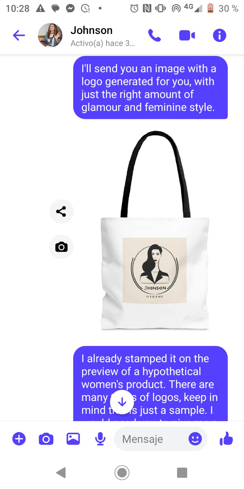
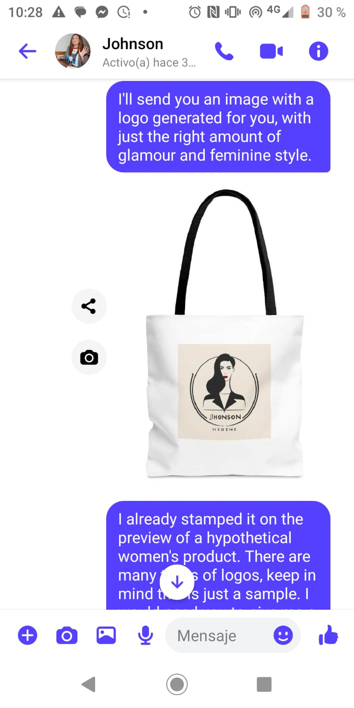

Servicios freelancer
En esta sección encontrarás debajo los diferentes servicios que brindo.
Redacción:
¡Saludos y bienvenido/a a mi mundo de palabras y creatividad! Soy Leandro Elian Ballato, un apasionado redactor de contenidos con un amor inquebrantable por la escritura persuasiva y cautivadora. Mi pluma es mi herramienta mágica, capaz de transformar ideas simples en narrativas poderosas que capturan la esencia y la esencia de cualquier tema. Con una destreza hábil en la creación de contenido atractivo, he perfeccionado el arte de tejer historias que no solo informan, sino que también inspiran y motivan a la acción. Mi enfoque no se limita simplemente a la gramática impecable y la estructura fluida, sino que se extiende a la comprensión profunda de la audiencia y la capacidad de adaptar el tono y el estilo para generar un impacto significativo. A través de mi experiencia, he colaborado con diversas marcas y empresas, ayudándolas a destacar en un mar de información con contenido que deja una huella perdurable en la mente de los lectores. Desde artículos y blogs convincentes hasta copias publicitarias impactantes y contenido optimizado para SEO, he demostrado mi habilidad para llevar a cabo estrategias de contenido efectivas que generan resultados tangibles. Si estás buscando un redactor creativo que eleve la calidad de tu contenido y amplifique la voz de tu marca, no busques más. Estoy listo/a para embarcarme en nuevos desafíos y convertir ideas en historias cautivadoras que dejarán una impresión duradera en tus audiencias. Permíteme llevar tu contenido al siguiente nivel. ¡Estoy listo/a para escribir la próxima gran historia contigo! Cordialmente,
Diseño gráfico publicitario
Aquí encontrarás algunas imágenes creadas por mí haciendo uso de diferentes herramientas
.jpeg)
.jpeg)
.jpeg)
.jpeg)
.jpeg) 

Diseño Web:
¡Hola y bienvenido/a al mundo del desarrollo web, donde las ideas se convierten en experiencias digitales sorprendentes! Soy Leandro Elian Ballato, un apasionado desarrollador web con un amor inquebrantable por la creación de experiencias digitales innovadoras y atractivas. Mi teclado es mi pincel y mi código es mi lienzo, a través del cual transformo conceptos abstractos en interfaces dinámicas y funcionales que hacen palpable la visión de cada cliente. Con una amplia experiencia en el desarrollo de sitios web atractivos y fáciles de usar, he perfeccionado el arte de combinar diseño estético con funcionalidad sólida. Mi enfoque no se limita a la escritura impecable de código, sino que se extiende a comprender las necesidades únicas de cada proyecto y a traducirlas en soluciones personalizadas que superan las expectativas. A lo largo de mi trayectoria, he colaborado con diversas marcas y empresas, ayudándolas a establecer una presencia digital sólida y memorable. Desde la creación de sitios web receptivos y optimizados para SEO hasta la implementación de soluciones de comercio electrónico seguras y eficientes, he demostrado mi capacidad para llevar a cabo proyectos web complejos y exigentes con destreza y profesionalismo. Si estás buscando un desarrollador web creativo que convierta tus ideas en realidades digitales cautivadoras, estás en el lugar adecuado. Estoy listo/a para llevar tu presencia en línea al siguiente nivel y crear experiencias que dejarán una impresión duradera en tus usuarios. Permíteme ser el arquitecto digital de tu próxima gran idea. ¡Juntos, podemos construir un mundo digital impresionante y funcional! Saludos
Marketing Digital:
Bienvenido/a al apasionante mundo del marketing digital, donde las estrategias se convierten en historias de éxito y las ideas se transforman en resultados tangibles! Soy Leandro Elian Ballato, un estratega de marketing digital apasionado y orientado a resultados, con un profundo amor por la creación de campañas que no solo generan impacto, sino que también dejan una huella perdurable en la mente de los consumidores. Mi mente es mi herramienta de creación y mi análisis es mi brújula, a través de la cual navego por el vasto océano digital para posicionar marcas y productos en la cima del reconocimiento y la relevancia. Con una amplia experiencia en la planificación y ejecución de campañas digitales integrales, he perfeccionado el arte de fusionar la creatividad con la estrategia para producir resultados medibles y significativos. Mi enfoque no se limita simplemente a la generación de leads y el aumento de conversiones, sino que se extiende a la construcción de relaciones sólidas y duraderas con los consumidores, basadas en la confianza y la autenticidad. A lo largo de mi trayectoria, he colaborado con diversas marcas y empresas, ayudándolas a expandir su alcance y a potenciar su presencia en línea a través de campañas digitales innovadoras y efectivas. Desde la implementación de estrategias de SEO y SEM hasta la gestión de campañas de redes sociales y la optimización de contenido, he demostrado mi habilidad para navegar por el panorama digital con destreza y eficacia. Si estás buscando un estratega de marketing digital creativo y centrado en los resultados que pueda llevar tu marca al siguiente nivel, has llegado al lugar adecuado. Estoy listo/a para crear narrativas digitales poderosas que conecten con tu audiencia y posicionen tu marca en la cima del reconocimiento y la preferencia del consumidor. Permíteme ser el impulsor de tu próxima gran historia de éxito digital. ¡Juntos, podemos alcanzar nuevas alturas de relevancia y éxito en el mundo del marketing digital! Cordialmente, Leandro Elian Ballato